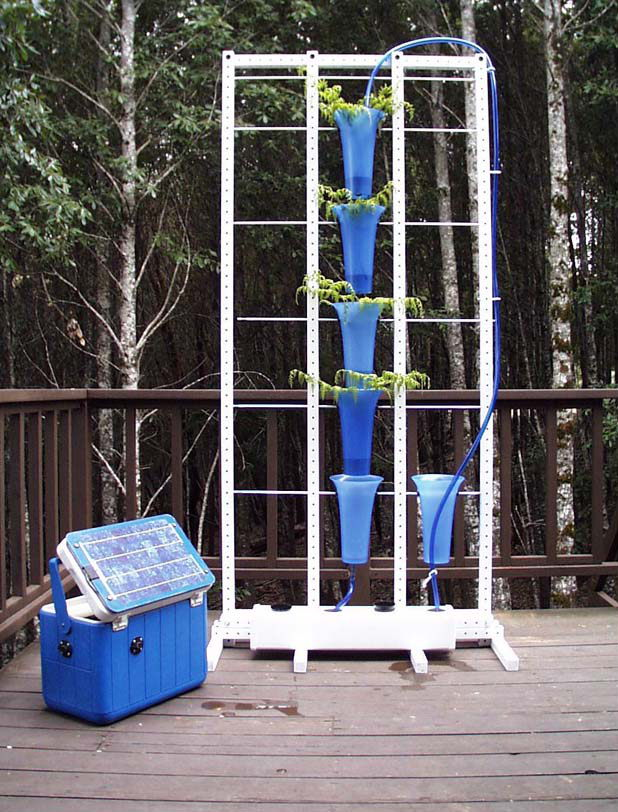
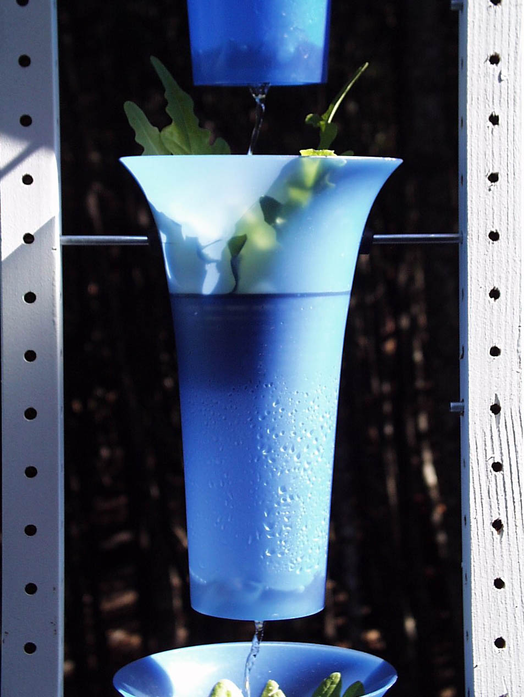
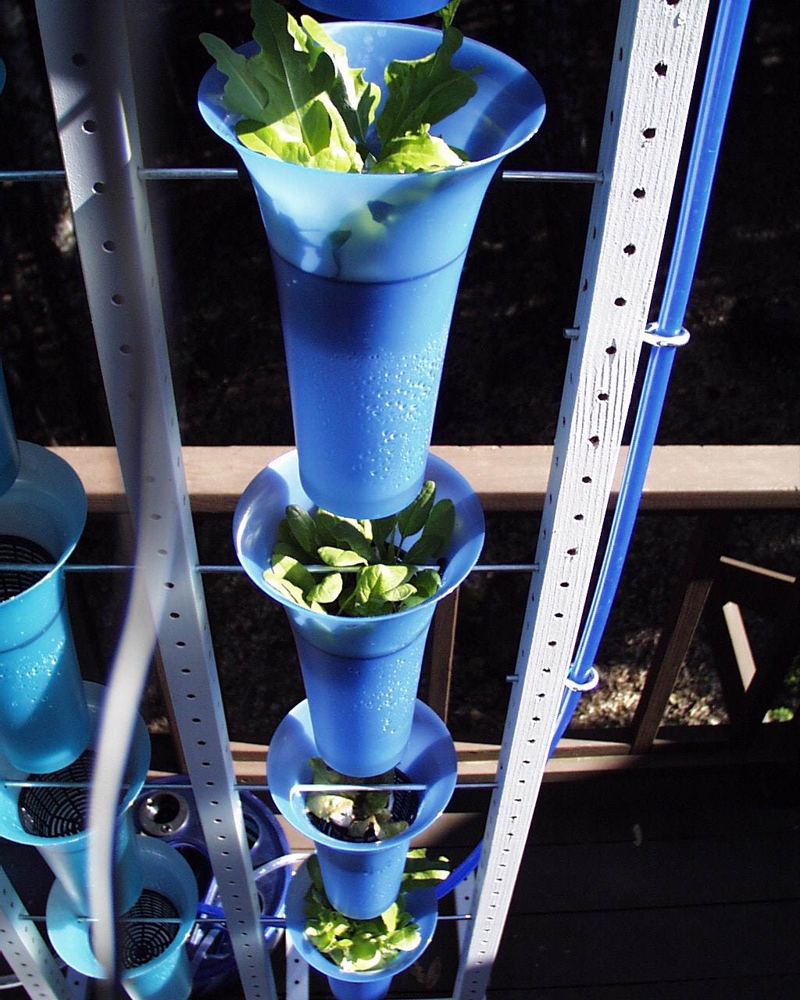
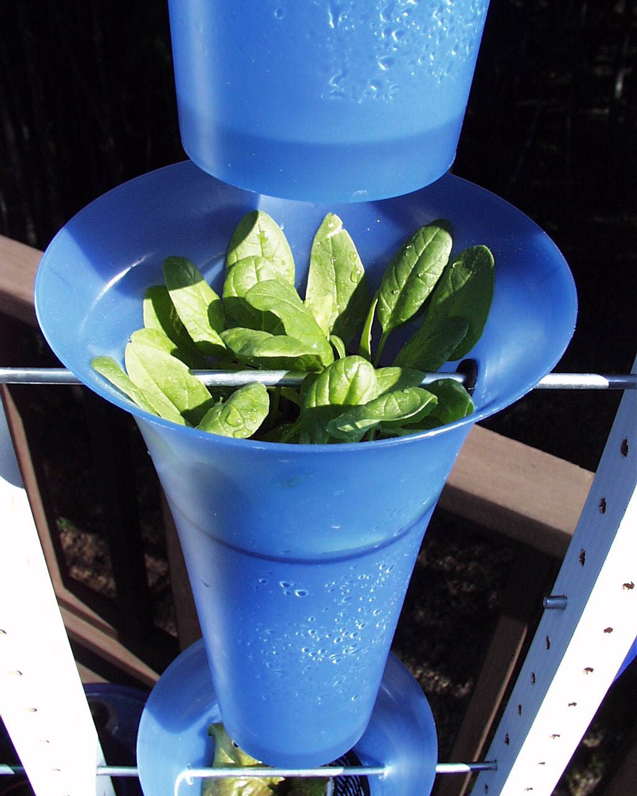

grow cabinets revision 7815
^ Projects infobox ^^
| image | Aerop v1.jpg |
| designers | |
| date | |
| vitamins | |
| materials | |
| transformations | |
| lifecycles | |
| tools | [[wrenches|Wrenches]] |
| parts | [[fluid_pumps|Fluid pumps]], [[hoses|Hoses]], [[frames|Frames]], [[nuts|Nuts]], [[bolts|Bolts]], [[category:controllers|Controllers]], [[lights|Lights]], [[wires|Wires]], [[electrical_connectors|Electrical connectors]] |
| techniques | [[tri_joints|Tri joints]] |
| stl | |
| git | |
Introduction
A grow box is a partially or completely enclosed system for raising plants indoors or in small areas. Grow boxes are used for a number of reasons, including lack of available outdoor space or the desire to grow vegetables, herbs or flowers during cold weather months. They can also help protect plants against pests or disease.
Grow boxes may be soil-based or hydroponic. The most sophisticated examples are totally enclosed, and contain a built-in grow light, intake and exhaust fan system for ventilation, hydroponics system that waters the plants with nutrient-rich solution, and an odor control filter. Some advanced grow box units even include air conditioning to keep running temperatures down, as well as CO
2 to boost the plant's growth rate. These advanced elements allow the gardener to maintain optimal temperature, light patterns, nutrition levels, and other conditions for the chosen plants.
Key growlight options include fluorescent bulbs, which offer relatively limited light output; high-intensity discharge lamps such as sodium-vapor lamps and metal-halide lamps; and light-emitting diodes bulbs, which are becoming more energy-efficient.
In different sizes and degrees of complexity, grow boxes are also referred to as grow cabinets and lightproof cabinets. A full-room version of a grow box is a growroom.
Challenges
Suitable conditions to grow staple foods and medicines are not always readily available outside.
Approaches
<youtube>Q9fjKeYOyqU</youtube>\\
Isolate an area, control it's temperature, humidity, light, warmth, air movement, nutrients, and anything else needed to aid in the growth of useful plants.



